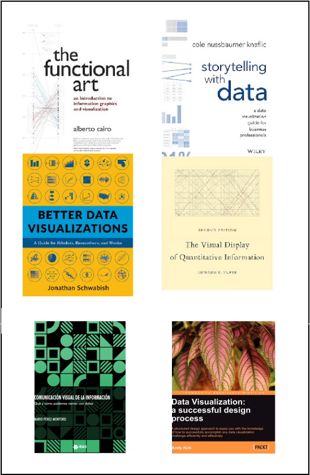

Infografia i Visualització de dades - Principis
El llibre de capçalera:
"Visualization Analysis & Design" de Tamara Munzner
Altres llibres que també farem servir:
Functional Art, de Alberto Cairo
Storytelling with data, de Cole Nussbaumer
Better data visualization, de Jonathan Schwabish
The visual display of quantitative information, de Edwars R. Tufte

Tipus de dades segons Ben Schneiderman i Tamara Munzner
Percepció: cal saber què veiem i com ho veiem!
Com triar la tècnica: Solució fàcil, però limitada:
Llista de tècniques: cal conèixer el trets principals de cada tècnica per poder triar-la amb criteri.
Periodic Table of the Visualization >>
Tipus Eines:
DATA VISUALISATION RESOURCES és una bona font actualitzada que manté Andy Kirk. >>
>
Fi d'aquest presentació. Gràcies.
Back:
2-Introducció